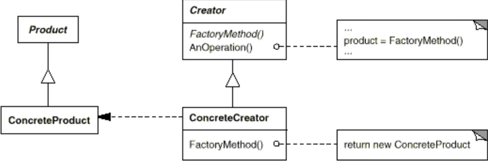
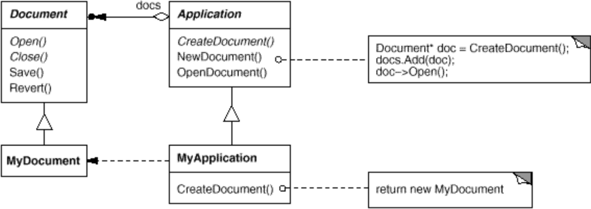

Il Factory Method è un class design pattern creazionale.
Si ipotizzi che un sistema software gestisca la creazione e l’editing di diversi documenti.
Nel sistema sono definite due principali classi astratte:
Application e Document. Per ciascuna tipologia
di applicazione vengono definite relative sottoclassi, come
TextApplication e TextDocument. La classe
astratta Application ha il compito di gestire documenti,
creandoli o aprendoli quando necessario.
Il problema sorge sapendo che Application non può
prevedere quale tipo di documento l’utente vuole creare. Solamente le
sottoclassi di Application conoscono il tipo da
istanziare.
abstract class Application {
public Document newDocument() {
Document d;
if(this.instanceOf(TextApplication))
d = new TextDocument();
else if(this.instanceOf(CalcApplication))
d = new CalcDocument();
return d;
}
}
Gli obiettivi di questo design pattern sono
factory per la creazione di oggetti


abstract class Application {
public Document newDocument() {
Document d = createDocument();
return d;
}
public abstract Document createDocument();
}
class TextApplication extends Application {
@Override
public Document createDocument() {
return new TextDocument();
}
}